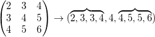

-Matrix, die in jeder Zelle einer Matrix zentriert ist, sucht den Medianwert von N mal N Zellen und ersetzt dann den zentralen Zellenwert mit dem Medianwert.
-Matrix, die in jeder Zelle einer Matrix zentriert ist, sucht den Medianwert von N mal N Zellen und ersetzt dann den zentralen Zellenwert mit dem Medianwert.Die X-Funktion medianflt2 untersucht die N mal N Pixel, die in jeder Zelle einer Matrix zentriert sind, sucht den Medianwert von N mal N Zellen und ersetzt dann den zentralen Zellenwert mit dem Medianwert. Der Filter ist nützlich zum Entfernen von Punktrauschen (weiße Punkte, schwarze Punkte) aus einem Bild, da diese Pixel normalerweise Werte haben, die signifikant von den Medianzellwerten abweichen.
Um diese Funktion zu verwenden:
| Neu berechnen |
Bedienelemente zur Neuberechnung der Analyseergebnisse
Weitere Informationen finden Sie unter Analyseergebnisse neu berechnen. |
|---|---|
| Eingabematrix |
Die Eingabematrix Hilfe zum Festlegen von Bereichen finden Sie hier: Eingabedaten festlegen |
| Ausgabematrix |
Die Ausgabematrix Hilfe zum Festlegen der Bereiche finden Sie unter: Ergebnisse ausgeben |
| Fenstergröße |
Legt die Filterfenstergröße fest. |
| Auffülloptionen |
Legt fest, wie Zellen außerhalb der Grenzen aufgefüllt.
|
Dieser Filter untersucht eine -Matrix, die in jeder Zelle einer Matrix zentriert ist, sucht den Medianwert von N mal N Zellen und ersetzt dann den zentralen Zellenwert mit dem Medianwert.
Zum Beispiel:
Quellmatrix: 
Für eine 3 X 3 Filtermatrix, die in Zelle (2,2) zentriert ist, ist die Matrix:

Der Medianwert der Filtermatrix lautet ; daher bleibt Zelle(2,2) in der Ausgabematrix .
Beim Anwenden eines Filters auf den Rand der Quellmatrix liegt der Filter vielleicht außerhalb der Matrix. Sollte dies der Fall sein, kann der Anwender den Bereich außerhalb der Quellmatrix mit Nullen auffüllen (Auffüllen mit Nullen), durch Reflektion auffüllen (Auffüllen durch gespiegelte Werte) oder durch wiederholte Kantenwerte auffüllen (Auffüllen mit Kantenwerten).